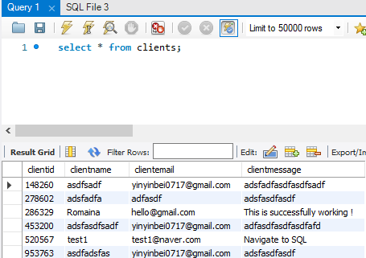
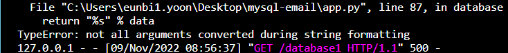
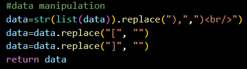

install lbrary
from flask_mysqldb import MySQL
add configuration
mysql=MySQL()
app.config['MYSQL_USER']=''
app.config['MYSQL_HOST']='localhost'
app.config['MYSQL_DB']=''
go to mysql workbench and find username
app.config['MYSQL_USER']='root'
in workebnch create database and create table
create database name as "mydatabase"
in Query1, please type as below
CREATE TABLE clients(clientid INT NOT NULL PRIMARY KEY, clientname VARCHAR(40), clientemail VARCHAR(40), clientmessage VARCHAR(500));
verify the table
show tables;
describe clients;
fill out configuration in python (password exist then, app.config['MYSQL_PASSWORD']="***"
mysql=MySQL()
app.config['MYSQL_USER']='root'
app.config['MYSQL_HOST']='localhost'
app.config['MYSQL_DB']='mydatabase'
mysql init
mysql.init_app(app)
if you cannot make table in the workbench, create table by python
with app.app_context():
#db.create_all()
cur=mysql.connection.cursor()
cur.execute('''
CREATE TABLE
''')
cur.close()
send information into mysql
cur=mysql.connection.cursor()
cur.execute('''
INSERT INTO clients(clientid, clientname, clientemail, clientmessage)
VALUES(%s,%s,%s,%s);
''', (randint(0,1000000),name,email,message))
mysql.connection.commit() #before closing this
cur.close()
check if we really have the data
@app.route("/database")
def database():
cur=mysql.connection.cursor()
cur.execute('''
SELECT * FROM clients;
''')
data=cur.fetchall()
cur.close()
return "%s" % data
if you want to see specific data with filtering, change cur.execute as below
cur.execute('''
SELECT clinetmessage FROM clients WHERE clientname="dataname";
''')
test flask app and type information and check data in workbench
select * from clients;

go to /database html and check all data
here is the error happened to solve this issue, please follow below

